Honesty as a Design Principle
01 — FramingWhat is honest design?
Honesty is an old idea in design. It predates the word "design" in its modern sense. The Arts and Crafts movement of the late nineteenth century defined itself against industrial production that dressed cheap materials in the appearance of expensive ones. By the turn of the twentieth century, the concern had been formalized into a principle. Louis Sullivan, writing in 1896, held that a building's form should follow its function, meaning that a tall building should look tall and express the structural logic that made it so. Adolf Loos, writing in 1910, argued that ornament applied to disguise a material's nature was a form of moral failure. Half a century later, Dieter Rams distilled the idea into his sixth principle of good design:
"Good design is honest. It does not make a product more innovative, powerful or valuable than it really is. It does not attempt to manipulate the consumer with promises that cannot be kept."— Dieter Rams, Principle 6 of Ten Principles for Good Design
Across these formulations, honesty in design names the same underlying commitment: that a designed object should align with what it is. Its surface should correspond to its substance. Its claims should correspond to its capabilities. Its form should express, rather than disguise, the logic of its construction and the intention behind its making.
What makes the principle difficult to hold is that design is always working against pressures that reward the appearance of honesty over its practice. The rhetoric of minimalism is easy to borrow. The signals of rigor can be reproduced without the reasoning that originally generated them. Honesty in design is therefore also a form of self-scrutiny: a readiness to ask whether the work is what it claims to be, or whether it has drifted into performing the idea.
02 — True to the materialMaterial honesty
Material honesty is the most tangible and historically grounded form of design honesty — and in some ways the most debated, because it's the one that most directly collides with craft, aesthetics, and the nature of making things.
The core idea
Materials have inherent properties — weight, texture, structural behavior, aging patterns — and material honesty says design should work with those properties rather than against or around them. Wood should flex and grain. Concrete should be heavy and rough. Steel should read as tensile and precise. When a material is treated or finished to disguise what it is, something is being concealed — and the argument is that this concealment is a kind of lie.
Where it comes from
The principle has deep roots. John Ruskin and the Arts and Crafts movement were reacting to industrial production that used cheap materials dressed up as expensive ones — machine-stamped ornament mimicking hand carving, cast iron painted to look like stone. They saw this as morally corrupt, not just aesthetically bad. The dishonesty of the material was connected to a broader dishonesty about labor and value.
Modernism picked this up and radicalized it. Adolf Loos declared ornament a crime. The Bauhaus pushed for forms that expressed how things were made. Le Corbusier left concrete raw — béton brut — because finishing it would have been a lie about what it was. The material became the aesthetic, not a substrate for decoration.
"Freedom from ornament is a sign of spiritual strength."— Adolf Loos, Ornament and Crime, 1910
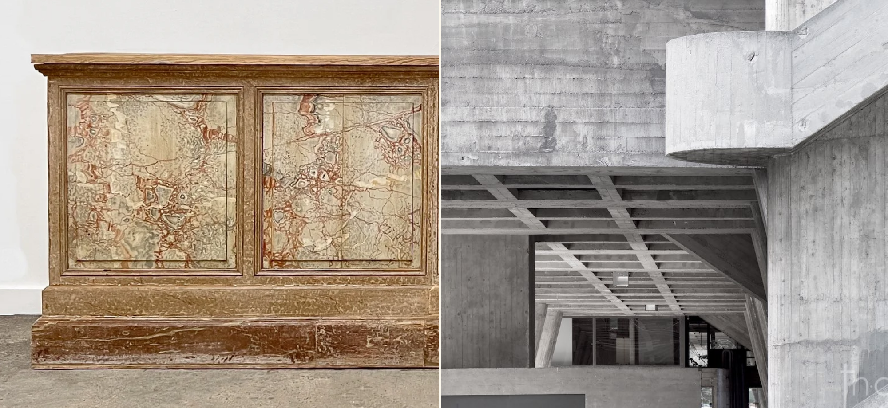
Honest vs. literal
The interesting tension is between material honesty and material literalism. Strict literalism would say: never finish, never treat, never alter a material's natural appearance. But that quickly becomes untenable. Wood is sealed to prevent rot — is that dishonest? Steel is coated to prevent corrosion. Concrete is polished. These treatments serve the material and the object. The honest version of material thinking isn't "never alter" but rather "don't misrepresent." A sealed wood surface that still reads as wood is honest. A wood surface printed with a marble pattern is not.
Digital materials
Material honesty gets philosophically interesting in digital and screen-based design. Early interface design leaned heavily on skeuomorphism — interfaces that mimicked physical materials, with leather textures, stitching, fake wood grain, glossy plastic buttons that cast shadows as if lit from above. This was material dishonesty in a direct sense: the screen was pretending to be something it wasn't.
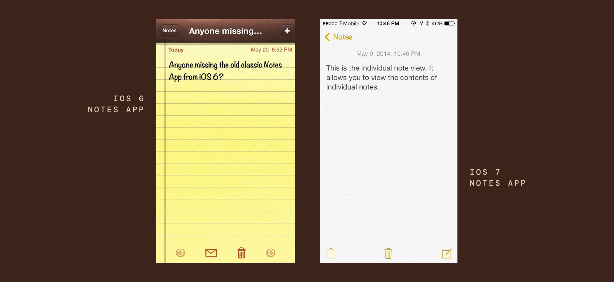
The flat design movement was partly a reaction to this — an argument that the honest material of a screen is light and pixels, not simulated leather. But flat design created its own problems, stripping away affordances that helped users understand what was interactive. The honest material turned out to be harder to use. This is a recurring problem with material honesty: the literal truth of the material isn't always the most useful or humane expression of it.
03 — Form follows fabricationStructural honesty
Structural honesty is about the relationship between how something is built and how it appears — whether the logic of construction is legible in the final form, or whether it's hidden, disguised, or contradicted by the surface.
The core idea
A structurally honest design allows you to read, or at least sense, how it holds together. The forces at work — compression, tension, load, span — are expressed rather than concealed. The joints, connections, and systems that make something function are not treated as problems to be covered up but as potential sources of form and meaning. Structure isn't just engineering underneath design; it is design.
Architecture as the primary site
Architecture is where structural honesty has been most explicitly theorized and most visibly practiced. Viollet-le-Duc, the 19th century French architect and theorist, argued that Gothic cathedrals were the supreme example of structural honesty — every element of the form, the pointed arch, the flying buttress, the ribbed vault, was a direct expression of how the building stood up. Nothing was decorative in the pure sense; ornament and structure were the same thing.
The modernists carried this forward. The Pompidou Centre took the principle to an extreme — structure, circulation, and services all pulled to the exterior and color-coded, leaving the interior completely open. It's the most literal possible statement of structural honesty, and it's also polarizing, because legibility at that scale tips into spectacle. Louis Kahn made a philosophy out of distinguishing "served" and "servant" spaces, letting the mechanical and structural systems have their own legible presence in the building.
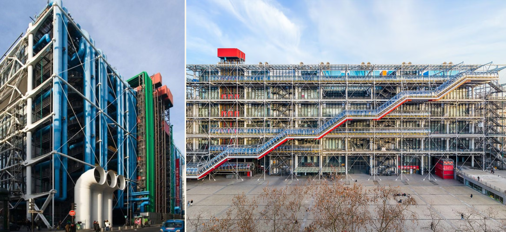
But the most famous case shows how easily the principle can be performed rather than practiced. Mies van der Rohe's Seagram Building is widely read as a defining statement of structural honesty in 20th-century architecture, but the bronze I-beams running up the facade are not structural. They are applied over fireproofed structural steel for the sake of preserving the look of an exposed frame that building codes no longer permitted. The building most often held up as an icon of structural honesty is, on close inspection, a performance of it.
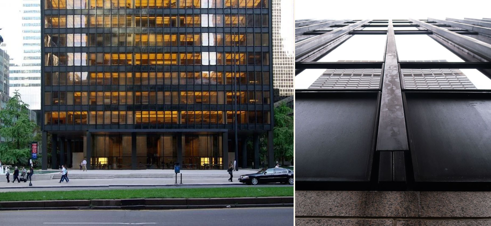
Furniture and objects
In furniture and product design, structural honesty often shows up as exposed joinery. A through-tenon that visibly passes through a leg, a dovetail joint left visible at a drawer corner, a bolt and nut left proud of a surface — these choices say: here is how this is held together, and we're not embarrassed by it. Shaker furniture is the canonical example, where the construction logic and the aesthetic are completely unified. Nothing is hidden because nothing needs to be.
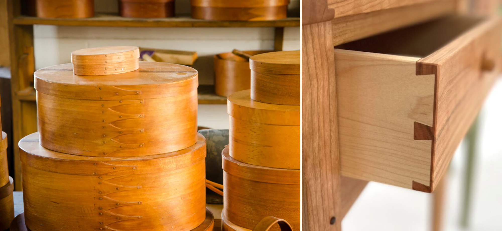
Louis Kahn took this ethic to its philosophical extreme. For Kahn, designing honestly meant asking the material what it wanted to be — treating its inherent properties not as constraints to be worked around but as intentions to be followed.
"You say to brick, 'What do you want, brick?' Brick says to you, 'I like an arch.'"— Louis Kahn
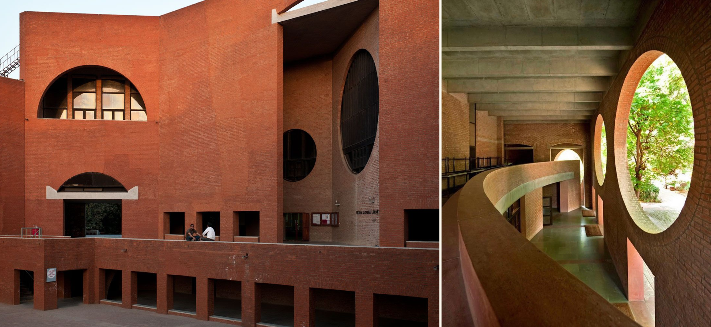
Graphic and typographic structure
In two-dimensional design, structural honesty translates to the underlying systems that organize the work. The Swiss International Style made the grid not just a tool but a visible principle — layouts that let you feel the underlying structure even when the grid lines themselves weren't printed. There's a kind of integrity in work where the organizing logic is coherent and present, versus work that uses structure arbitrarily or hides the absence of structure behind visual noise.
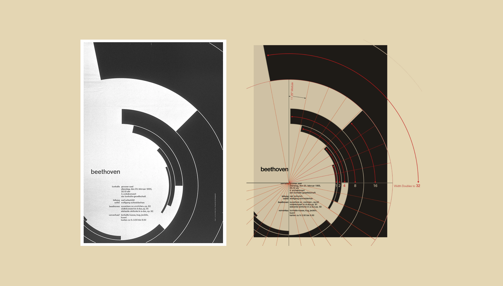
The dishonest structure
Structural dishonesty takes several forms. The most common is the false front — a facade that implies a structural logic the building behind it doesn't have. Victorian commercial buildings often had elaborate stone fronts that read as load-bearing masonry while the actual structure was iron frame. The face was a performance of solidity with no structural role.
Structure as narrative
There's a deeper dimension to structural honesty that goes beyond construction. It's about whether the logic of a design — the reasoning behind decisions — is coherent and present in the work. A design that results from clear thinking tends to have a kind of structural integrity you can feel even without knowing the thinking behind it. A design that was rationalized after the fact, or that papers over unresolved contradictions, tends to feel structurally dishonest in this broader sense — the joints don't quite fit, the hierarchy doesn't quite hold, something is being covered that didn't get resolved. The surface looks fine; the structure underneath doesn't add up.
04 — Promise and deliveryIntentional honesty
Intentional honesty is about alignment between what a design claims to do and what it actually does. It's the question of whether the work is in service of its stated purpose — or whether the stated purpose is a cover for something else.
The Rams principle
When Dieter Rams said "good design is honest," he meant it literally: a product should not overstate its capabilities, its value, or its innovation. A simple radio shouldn't look like a piece of advanced technology it isn't. A cheap material shouldn't be styled to imply luxury. The design should accurately represent what the thing is and does. This sounds simple but cuts against enormous commercial pressure to make things appear more than they are.
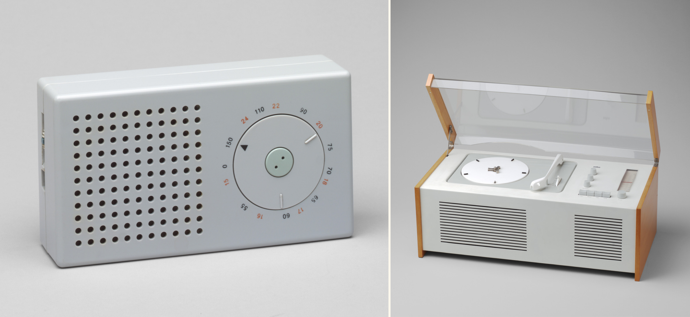
Purpose drift
Intentional honesty breaks down when the actual purpose of a design quietly diverges from the stated one. A health app might say it's designed to support wellbeing, but if its engagement mechanics are optimized for retention metrics above all else, the real design intent is retention — not health. The interface is lying, not in any individual element, but in the overall claim it makes about what it's for. This kind of drift often happens gradually, through accumulated small decisions that each seem reasonable in isolation.
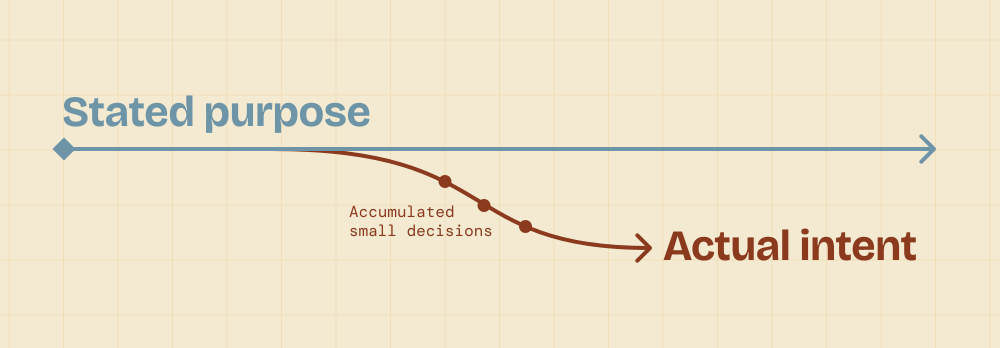
Feature honesty
A related failure mode is designing features that exist to be announced rather than used. A product roadmap gets padded with capabilities that signal ambition or respond to competitive pressure, but weren't designed with real use cases in mind. The feature is technically there — so the claim isn't false — but the design intent behind it was never genuinely about the user. Intentional honesty would require asking: do we actually believe people need this, or are we building it for another reason?
"Do we actually believe people need this, or are we building it for another reason?"
The brief as contract
Intentional honesty also applies to how designers engage with the brief. A brief frames a problem, and it's easy to accept that framing uncritically — to design a solution to the stated problem without asking whether the stated problem is the real one. An honest designer pushes on the brief: is this actually what users need? Is this the right intervention point? Sometimes the most intentionally honest move is to say the problem as defined isn't the problem worth solving.
Honest toward whom?
There's a relational dimension easy to miss: intentional honesty isn't neutral. The designer and the user sit in a power asymmetry, and the user usually can't see behind the surface. When the business's interests and the user's interests align, honest design serves both. When they don't, intentional honesty becomes a question of whose interests the design is actually honest toward — and that's a choice the designer is making, whether or not they frame it as one.
Where it creates friction
The difficulty is that intentional honesty often requires saying uncomfortable things — to clients, to stakeholders, to your own team. It means not dressing up a compromise as a considered decision, not presenting a constrained output as if it were an ideal one, and not building things you don't believe in without at least naming that tension. That friction is the cost of the honesty, but the alternative — design that pretends to serve purposes it doesn't — erodes trust over time.
05 — Intent vs. performanceAuthorial honesty
Authorial honesty in design is fundamentally about the relationship between the designer's intent and the work itself — whether the decisions being made are driven by genuine reasoning or by the performance of reasoning.
Solving a real problem vs. performing problem-solving
A lot of design work, especially in professional settings, can drift into theater. Decks get made, frameworks get applied, the design process gets documented beautifully — but the underlying question of whether the work is actually solving something real gets lost. Authorial honesty asks: do you believe in what you're making? Is the problem framing true, or is it a narrative constructed to justify a solution that was already decided?
This extends to the design process itself. A process can be honest — genuinely exploratory, with visible iteration and acknowledged dead-ends — or performative, presented as a clean narrative assembled after the fact. The cleaner the story, the more worth asking whether the work actually looked like that.
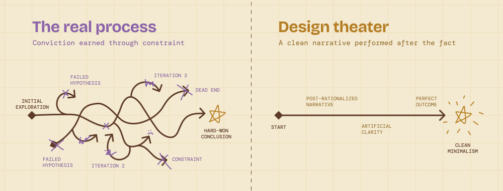
The designer's voice vs. borrowed signals
Design has its own version of the "anxiety of influence." It's easy to make work that looks like good design — that borrows the aesthetic vocabulary of Dieter Rams, or Swiss typography, or whatever the current moment's version of rigor looks like — without the underlying thinking that originally generated those choices. Authorial honesty is the difference between minimalism as a genuine conclusion and minimalism as a costume.
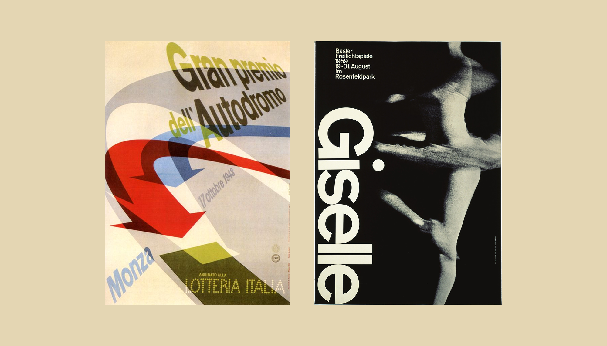
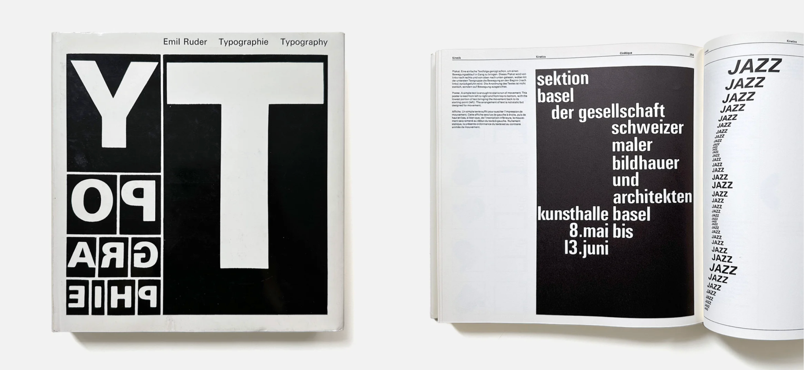
Constraint honesty
Sometimes designers present work as if it were unconstrained when it wasn't — as if the outcome were the best possible answer rather than the best answer given real limits of time, stakeholder pressure, technical debt, or scope. There's something dishonest about that framing. Acknowledging constraints isn't weakness; it's accuracy. The work is what it is, made under conditions that shaped it.
A close relative is epistemic honesty — being clear about what's validated, what's judgment, and what's assumption. Conflating those categories flatters the work but erodes trust in it, especially under later scrutiny.
Advocacy and conviction
Authorial honesty also has a professional dimension. When you present work, are you advocating for what you actually believe is right, or are you presenting what you think the room wants to see? Designers often develop a kind of learned shapeshifting — reading the audience and adjusting — which is a real skill, but can erode your sense of what you actually think. The honest designer knows the difference between genuine openness to feedback and pre-emptive capitulation.
"Are you advocating for what you actually believe is right, or are you presenting what you think the room wants to see?"
Where it gets complicated
Design is inherently a service discipline — you're solving someone else's problem, within their constraints, for their users. So "authorial honesty" can't mean self-expression for its own sake. The honest version is more like: being truthful about what the work is doing, what tradeoffs were made, what you believe and why, even when that's uncomfortable. It's less about having a signature style and more about not bullshitting — yourself or anyone else — about what the work is and why it exists.
Honesty in design is not a single principle but a set of related commitments — to materials, to structure, to purpose, and to authorship — that collectively ask the same underlying question: Is the design telling the truth?